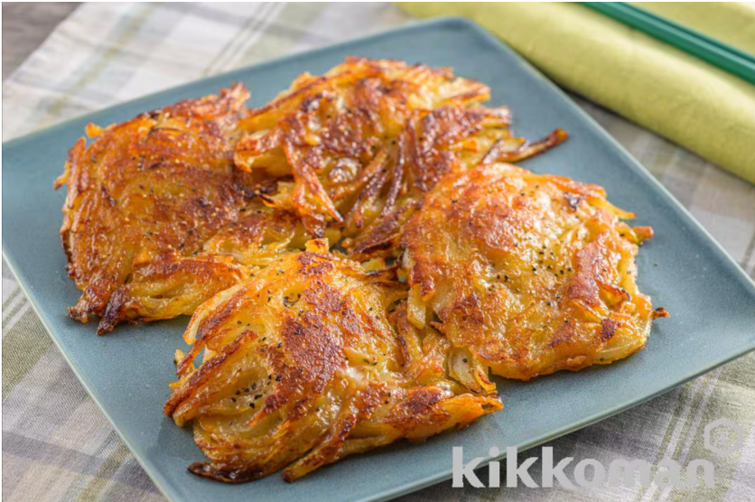

玉ねぎとじゃがいものチーズ焼き

材料（2人分）
- 玉ねぎ ... １個（２５０ｇ）
- じゃがいも ... １個（１２０ｇ）
- ピザ用チーズ... 50g
- 片栗粉... 大さじ3
- オリーブオイル... 大さじ１
- キッコーマンいつでも新鮮しぼりたて生しょうゆ ... 小さじ3
- 黒こしょう（粗びき）... 少々
作り方（調理時間:20分/目安）
- 玉ねぎは薄切り、じゃがいもは皮をむいてせん切りにする。
- ボウルまたはポリ袋に、玉ねぎ、じゃがいも、チーズ、片栗粉を入れてまんべんなく絡める。
- フライパンにオリーブオイル大さじ1/2を中火で熱し、（２）を1/8量ずつ薄く平らに広げ、４枚分を入れたら、中火で片面３分３０秒ずつ両面焼く。
- しょうゆ小さじ１と1/2を回しかけ、さらにさっと焼く。同様に残りの生地で４枚焼く。器に盛りつけ、黒こしょうをふる。
引用元
キッコーマンレシピサイト「ホームクッキング」